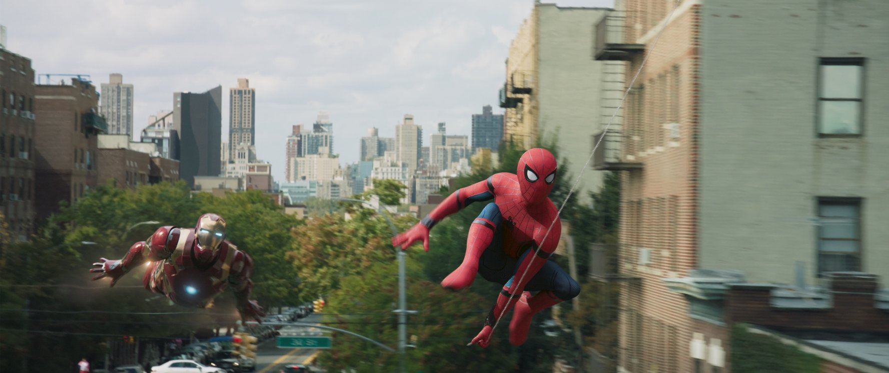
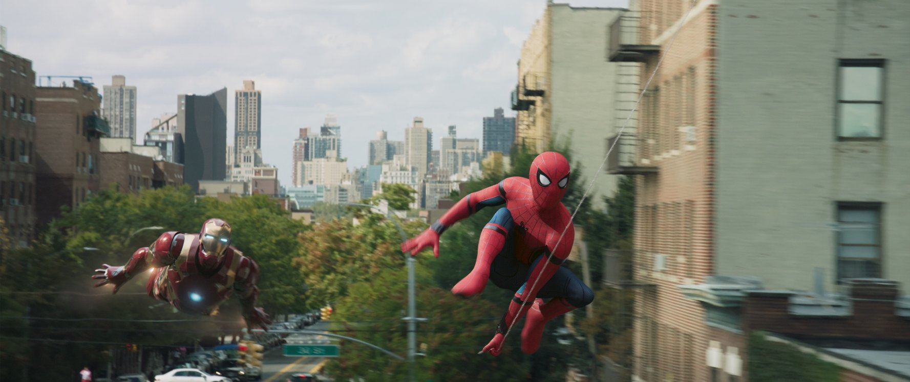

[Đánh giá phim] Spider-man: Homecoming - Thời dậy thì của Người Nhện
Spider-Man: Homecoming đánh dấu sự trở lại của Người Nhện về với vũ trụ điện ảnh Marvel. Đồng thời bộ phim này cũng thổi một luồng gió tươi mới, có phần hơi trẻ trâu đôi chút, cho công thức làm phim siêu anh hùng mà chúng tưởng chừng đã quá quen thuộc.
Spider-Man: Homecoming (tên tiếng Việt là Người Nhện Trở Về Nhà) mang chúng ta trở về với phong cách “cổ điển” trước khi vũ trụ điện ảnh Marvel (MCU) thay đổi quan điểm về phim siêu anh hùng của khán giả. Không giống Avengers vốn được cả thế giới xem như những ngôi sao với thân thế người người đều biết, nhà nhà đều nghe; Người Nhện là siêu anh hùng mà thân thế luôn được giữ bí mật. Vì sao? Vì đằng sau chiếc mặt nạ đầy kiêu hãnh ấy là… Nhóc Nhện Peter Parker.
Trình làng lần đầu tiên trong Captain America: Civil Wars, Nhóc Nhện đã tạo được ấn tượng ấn ư là mạnh mẽ đối với mình. Dĩ nhiên chúng ta ai cũng biết Người Nhện rồi, không phải qua truyện tranh thì ít nhất cũng phần nào bởi 2 series Spider-man và The Amazing Spider-man của Sony. Ấy thế mà Nhóc Nhện vẫn khiến mọi người phải bất ngờ vì… tính cách quá ư là con nít. Cũng phải thôi, Nhóc Nhện của MCU là sự kết hợp khá ư là tinh tế giữa các yếu tố của Người Nhện cổ điển trong comic và sự sáng tạo của Marvel Studio.
Nếu bạn giống như mình với hình ảnh Người Nhện trong tâm trí mình được xây dựng chủ yếu từ 2 series phim Spider-man và Amazing Spider-man hơn là từ truyện tranh thì Spider-Man: Home Coming hứa hẹn sẽ đem lại cho bạn nhiều điều thú vị “lạ mà quen”. Chúng ta đã quá quen với Người Nhện mà Sony xây dựng, vì vậy khi những yếu tố “cổ điển” như dùng máy bắn tơ hay thậm chí là sự “trẻ trâu” là khá ư xa lạ, nếu không muốn nói là “dội”. Nhưng sự thật là các bạn fan comic hay hoạt hình chắc chắc sẽ thấy rất hài lòng về sự “trở về nhà” này.
Trở lại với Homecoming, sau màn chào sân quá ư là ấn tượng thì Nhóc Nhện được ưu ái với bộ phim dành riêng cho mình. Marvel Studio được trao toàn bộ quyền sáng tạo với kinh phí đến từ Sony Pictures. Không biết bạn thế nào, tuy nhiên cá nhân mình thì đây là một sự kết hợp hoàn hảo. So với hãng mẹ của Marvel Studio là Disney, Sony Pictures nổi tiếng chịu chơi hơn rất nhiều và họ sẵn sàng chi đậm cho những ý tưởng mới lạ. Họ có thể thất bại thảm hại trong Ghost Buster (2016) nhưng cũng chính sự chịu chơi của Sony đã giúp chúng ta có được những bộ phim đầy thú vị như Baby Driver, Don't Breath,… Trong khi đó thì không phải ngẫu nhiên mà người ta nói rằng “phim của Marvel thì không thể thất bại”, bởi lẽ đây là một trong những studio sáng tạo nhất vào thời điểm này của Hollywood.
Phim của Marvel thì nội dung cũng đơn giản lắm, ít nhất là về bề nổi. Nhóc Nhện sau khi tham chiến cùng đội Người Sắt chống lại Đại Uý Mỹ thì được trở về nhà. Tuy nhiên cũng giống như bất kỳ cậu nhóc 15 tuổi nào trên đời này, cậu luôn muốn chứng tỏ khả năng của mình để tiếp tục được sánh vai cùng những siêu anh hùng trong Avenger (đội Người Sắt trong trường hợp bạn vẫn chưa xem Captain America: Civil Wars). Mà phàm là cái tuổi dậy thì nó nóng nảy bồng bộ nên chứng minh chẳng bao nhiêu mà phốt thì nhiều, lại còn phải đối đầu với chủ vựa ve chai công nghệ cao Kền Kền dày dặn tình trường nên lại càng bi kịch.
Những tình tiết của Spider-Man: Homecoming được đạo diễn Jon Watts xây dựng một cách khéo léo, sáng tạo dựa trên công thức phim siêu anh hùng sẵn có của Marvel. Đây cũng là cái hay của Marvel Studio, khi họ chọn những đạo diễn trẻ đầy tiềm năng thay vì là những cái tên nổi tiếng đã khẳng định được thương hiệu. Giống như James Gunn mang cái sự hài hước tinh tế vào Guardian of The Galaxy hay Scott Derrickson thổi chất huyền bí đến với Doctor Strange, đạo diễn trẻ người Mỹ truyền cái chất trẻ trung đúng kiểu phim teen cho Homecoming.
 Phim của Marvel luôn tuân thủ một cách tuyệt đối cách dẫn truyện kép, sử dụng tình tiết lẫn tâm lý nhân vật. Bởi vậy cho nên ngay cả khi một trong 2 yếu tố không thành công như mong đợi, bạn vẫn cảm thấy nó có sự cuốn hút chứ không nhàm chán. Spider-Man: Homecoming cũng tương tự, song song với những sự kiện diễn ra trong phim chính là hình ảnh Nhóc Nhện dần trưởng thành. Đặc biệt là ở đoạn đầu phim làm theo phong cách phim teen nên các tình huống có phần ngẫu nhiên rời rạc, thậm chí là ngớ ngẩn nếu bạn là người khó tính. Ấy thế nhưng chúng vẫn đóng vai trò quan trọng để giúp chúng ta “cảm” được bản chất của Nhóc Nhện. Vâng để hiểu được cậu nhóc trung học 15 tuổi thì không còn gì hiệu quả hơn là làm phim teen :”>
Điều mà mình thích nhất trong bộ phim này chính là “màu sắc”. Spider-Man: Home Coming giống như một bức tranh đầy “sắc màu” về đúng nghĩa đen lẫn nghĩa bóng để giúp chúng ta có thể hiểu được Nhóc Nhện. Từ người tình trong mộng Liz (Laura Harrier), nhóc mập Ned (Jacob Batalon), nữ sinh chuyên thả thính Michelle (Zendaya) cho đến dì May (Marisa Tomei); dàn nhân vật phụ của Spider-Man: Home Coming đem lại cảm giác “gần gũi” hơn nhiều so với những phim siêu anh hùng khác. Đó là những con người mà bạn dễ dàng bắt gặp trong cuộc sống đời thường, thậm chí là rơi vào những tình huống tương tự (dĩ nhiên là trừ việc có siêu năng lực).
Nhưng nổi bật nhất vẫn là Nhóc Nhện do chàng trai đến từ xứ sở sương mù Tom Holland thủ vai. Nếu như Người Nhện trong MCU cố gắng chứng tỏ mình xứng đáng được kề vai sát cánh với Người Sắt (và đội Avenger) thì Tom cũng đang trên con đường khẳng định tài năng theo bước đàn anh Robert Downey Jr. Vốn xuất thân từ sân khấu kịch và chỉ đóng những phim độc lập ít người biết đến, “ước mơ vươn đến một vì sao” của Tom Holland đã trở thành hiện thực khi trở thành Spider-man. Và màn trình diễn của anh chàng này trong phim sẽ khiến bạn cảm thấy “ấn tượng”. Thật ra nói diễn xuất ấn tượng thì cũng không hẳn, nhưng bạn sẽ thấy một Nhóc Nhện trẻ trung và đầy nhiệt huyết muốn khẳng định bản thân. Đây có lẽ chính là điều mà MCU cần lúc này.

Theo mình thì không phải ngẫu nhiên mà Người Sắt được lựa chọn là “người chăm sóc” Nhóc Nhện. Người Sắt chính là bộ phim khởi đầu MCU và biến diễn viên chính Robert Downey Jr trở thành một trong những siêu sao nổi tiếng nhất Hollywood hiện tại. Cá tính cao ngạo những vẫn đầy tình cảm biến Người Sắt thành “người thầy bất đắc dĩ” mang lại khá nhiều điều thú vị, ít nhất là theo trailer. Ngặt nỗi sự thật là vai trò của ảnh trong phim khá nhỏ, chỉ mang tính chất làm màu là chính thôi. Chứ người thật sự làm Nhóc Nhện trưởng thành chính là anh Kền Kền.
Nhắc đến nhân vật phản diện thì đây là một trong số ít điểm mà trước đây mình đánh giá cao Sony hơn là Marvel Studio. May mắn thay là sau khi trở lại MCU thì nhân vật phản diện của vẫn giữ được phần nào phong độ. Michael Keaton tuy không có nhiều đất diễn nhưng nhân vật Kền Kền của ảnh được xây dựng rất bài bản. Chẳng những bạn sẽ hiểu được vì sao ảnh lại trở thành ác nhân, mà còn cảm thấy được sự thay đổi về tính cách sau mỗi lần chạm trán Nhóc Nhện. Người ta nói kẻ ác nguy hiểm nhất chính là kẻ nghĩ mình “làm điều đúng” và anh Kền Kền nhà ta là điển hình.
Song song với nhân vật và nội dung, Spider-Man: Homecoming tiếp tục truyền thống của phim siêu anh hùng với những cảnh chiến đấu hoành tráng mãn nhãn. Tiền là thứ mà Sony Pictures không thiếu, và đó cũng điều mà Marvel Studio cần để khiến khán giả phải choáng ngợp. Phim Marvel luôn có 3 trường đoạn chiến đấu lớn chia đều cho đầu, giữa và cuối; không chỉ đơn thuần là gây ấn tượng mà chính là tiền đề cũng như hệ quả của những tình tiết diễn ra trong phim. Có mâu thuẫn thì sẽ có chiến đấu, có chiến đấu thì sẽ có sự trưởng thành, và có trưởng thành thành thì mới tạo được ấn tượng với người xem. Mặc dù vậy do đây là “phim teen” nên trường đoạn chiến đấu đầu phim không gây nhiều ấn tượng như Guardian of The Galaxy 2 hay Doctor Strange. Đến giữa phim thì chúng ta mới trở lại với phong cách chiến đấu đậm chất điện ảnh mang thương hiệu siêu anh hùng Marvel.
Có lẽ điểm trừ lớn nhất của Spider-Man: Homecoming đối với mình là phần nhạc. Bạn đừng nhầm, nó không tệ mà ngược lại lúc mạnh mẽ khi nhẹ nhàng phối hợp rất tốt với tình tiết phim. Đáng tiếc là nếu nói ấn tượng thì câu trả lời là không. Ngoài cái bản nhạc chuông vốn remix lại từ phần The Amazing Spider-man xuất hiện lúc đầu phim tạo cảm giác khác dejavu, phần còn lại gần như chẳng đọng lại gì cả. So với nhạc phim chị đẹp Wonder Woman nghe cực high thì Nhóc Nhện tỏ ra quá khiêm tốn về phần âm nhạc.
Tóm lại, Spider-Man: Homecoming theo mình là một bộ phim siêu anh hùng cực kỳ đáng xem ngay cả khi bạn không phải là fan của Marvel. Sự “trẻ hoá” của Nhóc Nhện có thể sẽ khiến một số fan lâu năm bị dội nhưng đó là sự thay đổi cần thiết để làm mới MCU.
PS. Kiên nhẫn là đức tính phải có của bất kỳ fan Marvel nào bạn nhé.
Phim của Marvel luôn tuân thủ một cách tuyệt đối cách dẫn truyện kép, sử dụng tình tiết lẫn tâm lý nhân vật. Bởi vậy cho nên ngay cả khi một trong 2 yếu tố không thành công như mong đợi, bạn vẫn cảm thấy nó có sự cuốn hút chứ không nhàm chán. Spider-Man: Homecoming cũng tương tự, song song với những sự kiện diễn ra trong phim chính là hình ảnh Nhóc Nhện dần trưởng thành. Đặc biệt là ở đoạn đầu phim làm theo phong cách phim teen nên các tình huống có phần ngẫu nhiên rời rạc, thậm chí là ngớ ngẩn nếu bạn là người khó tính. Ấy thế nhưng chúng vẫn đóng vai trò quan trọng để giúp chúng ta “cảm” được bản chất của Nhóc Nhện. Vâng để hiểu được cậu nhóc trung học 15 tuổi thì không còn gì hiệu quả hơn là làm phim teen :”>
Điều mà mình thích nhất trong bộ phim này chính là “màu sắc”. Spider-Man: Home Coming giống như một bức tranh đầy “sắc màu” về đúng nghĩa đen lẫn nghĩa bóng để giúp chúng ta có thể hiểu được Nhóc Nhện. Từ người tình trong mộng Liz (Laura Harrier), nhóc mập Ned (Jacob Batalon), nữ sinh chuyên thả thính Michelle (Zendaya) cho đến dì May (Marisa Tomei); dàn nhân vật phụ của Spider-Man: Home Coming đem lại cảm giác “gần gũi” hơn nhiều so với những phim siêu anh hùng khác. Đó là những con người mà bạn dễ dàng bắt gặp trong cuộc sống đời thường, thậm chí là rơi vào những tình huống tương tự (dĩ nhiên là trừ việc có siêu năng lực).
Nhưng nổi bật nhất vẫn là Nhóc Nhện do chàng trai đến từ xứ sở sương mù Tom Holland thủ vai. Nếu như Người Nhện trong MCU cố gắng chứng tỏ mình xứng đáng được kề vai sát cánh với Người Sắt (và đội Avenger) thì Tom cũng đang trên con đường khẳng định tài năng theo bước đàn anh Robert Downey Jr. Vốn xuất thân từ sân khấu kịch và chỉ đóng những phim độc lập ít người biết đến, “ước mơ vươn đến một vì sao” của Tom Holland đã trở thành hiện thực khi trở thành Spider-man. Và màn trình diễn của anh chàng này trong phim sẽ khiến bạn cảm thấy “ấn tượng”. Thật ra nói diễn xuất ấn tượng thì cũng không hẳn, nhưng bạn sẽ thấy một Nhóc Nhện trẻ trung và đầy nhiệt huyết muốn khẳng định bản thân. Đây có lẽ chính là điều mà MCU cần lúc này.

Theo mình thì không phải ngẫu nhiên mà Người Sắt được lựa chọn là “người chăm sóc” Nhóc Nhện. Người Sắt chính là bộ phim khởi đầu MCU và biến diễn viên chính Robert Downey Jr trở thành một trong những siêu sao nổi tiếng nhất Hollywood hiện tại. Cá tính cao ngạo những vẫn đầy tình cảm biến Người Sắt thành “người thầy bất đắc dĩ” mang lại khá nhiều điều thú vị, ít nhất là theo trailer. Ngặt nỗi sự thật là vai trò của ảnh trong phim khá nhỏ, chỉ mang tính chất làm màu là chính thôi. Chứ người thật sự làm Nhóc Nhện trưởng thành chính là anh Kền Kền.
Nhắc đến nhân vật phản diện thì đây là một trong số ít điểm mà trước đây mình đánh giá cao Sony hơn là Marvel Studio. May mắn thay là sau khi trở lại MCU thì nhân vật phản diện của vẫn giữ được phần nào phong độ. Michael Keaton tuy không có nhiều đất diễn nhưng nhân vật Kền Kền của ảnh được xây dựng rất bài bản. Chẳng những bạn sẽ hiểu được vì sao ảnh lại trở thành ác nhân, mà còn cảm thấy được sự thay đổi về tính cách sau mỗi lần chạm trán Nhóc Nhện. Người ta nói kẻ ác nguy hiểm nhất chính là kẻ nghĩ mình “làm điều đúng” và anh Kền Kền nhà ta là điển hình.
Song song với nhân vật và nội dung, Spider-Man: Homecoming tiếp tục truyền thống của phim siêu anh hùng với những cảnh chiến đấu hoành tráng mãn nhãn. Tiền là thứ mà Sony Pictures không thiếu, và đó cũng điều mà Marvel Studio cần để khiến khán giả phải choáng ngợp. Phim Marvel luôn có 3 trường đoạn chiến đấu lớn chia đều cho đầu, giữa và cuối; không chỉ đơn thuần là gây ấn tượng mà chính là tiền đề cũng như hệ quả của những tình tiết diễn ra trong phim. Có mâu thuẫn thì sẽ có chiến đấu, có chiến đấu thì sẽ có sự trưởng thành, và có trưởng thành thành thì mới tạo được ấn tượng với người xem. Mặc dù vậy do đây là “phim teen” nên trường đoạn chiến đấu đầu phim không gây nhiều ấn tượng như Guardian of The Galaxy 2 hay Doctor Strange. Đến giữa phim thì chúng ta mới trở lại với phong cách chiến đấu đậm chất điện ảnh mang thương hiệu siêu anh hùng Marvel.
Có lẽ điểm trừ lớn nhất của Spider-Man: Homecoming đối với mình là phần nhạc. Bạn đừng nhầm, nó không tệ mà ngược lại lúc mạnh mẽ khi nhẹ nhàng phối hợp rất tốt với tình tiết phim. Đáng tiếc là nếu nói ấn tượng thì câu trả lời là không. Ngoài cái bản nhạc chuông vốn remix lại từ phần The Amazing Spider-man xuất hiện lúc đầu phim tạo cảm giác khác dejavu, phần còn lại gần như chẳng đọng lại gì cả. So với nhạc phim chị đẹp Wonder Woman nghe cực high thì Nhóc Nhện tỏ ra quá khiêm tốn về phần âm nhạc.
Tóm lại, Spider-Man: Homecoming theo mình là một bộ phim siêu anh hùng cực kỳ đáng xem ngay cả khi bạn không phải là fan của Marvel. Sự “trẻ hoá” của Nhóc Nhện có thể sẽ khiến một số fan lâu năm bị dội nhưng đó là sự thay đổi cần thiết để làm mới MCU.
PS. Kiên nhẫn là đức tính phải có của bất kỳ fan Marvel nào bạn nhé.
Nguồn: agp8x - tinhte.vn